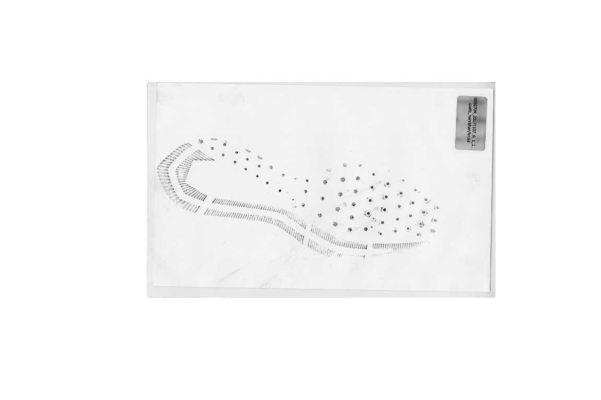
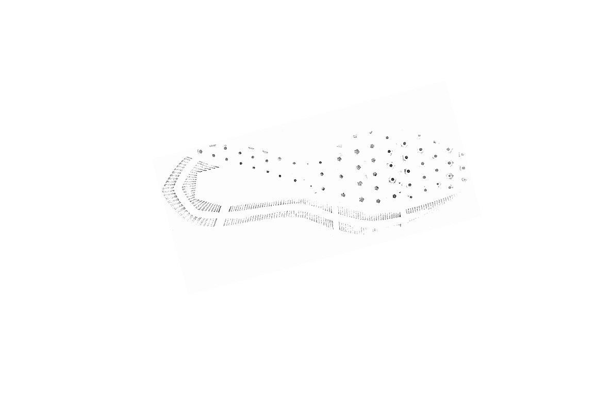

Shoeprint Identification
Susan VanderPlas
Matching Footwear Impressions
(Ideal version) Original Data

(Ideal version) Cleaned Data
 Intelligent automatic processing of images to remove background artifacts
(Ideal version) Analysis
Identify important features of the shoe
Extract the features
Compare to a database of shoeprint features or a set of suspect shoe prints
Find a candidate set of shoes to examine further
Use image matching algorithms to identify correspondance between test image and database images
Determine probability of match
Compare to current methods (human perception)
Less Ideal version
Partial prints
Smears
Incomplete databases
Hard to identify shoe model from print or partial print to get comparison prints
Computational Methods
Random Forests
Image analysis methods- SIFT, SURF, etc.
???
R package development to make code available to crime labs and practitioners
Data size
15,315 images (color, black and white, smudged, unsmudged, 2D, 3D)
growing weekly
4902 black and white powder prints
= 207 GB